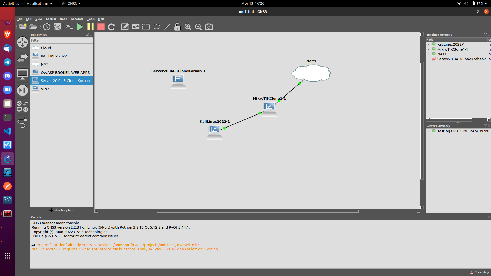
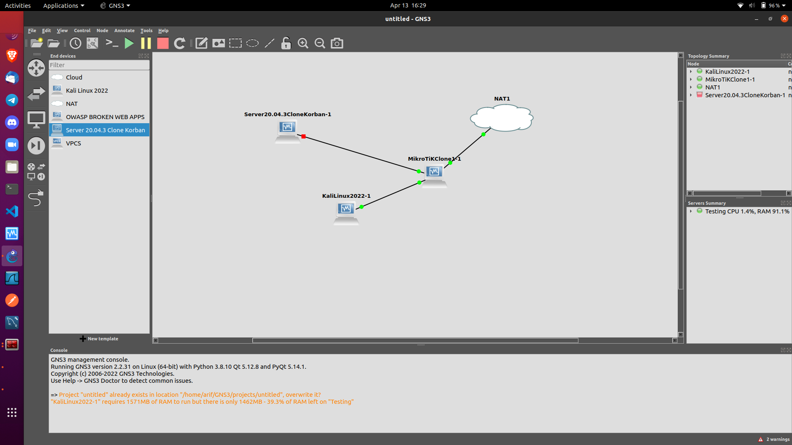
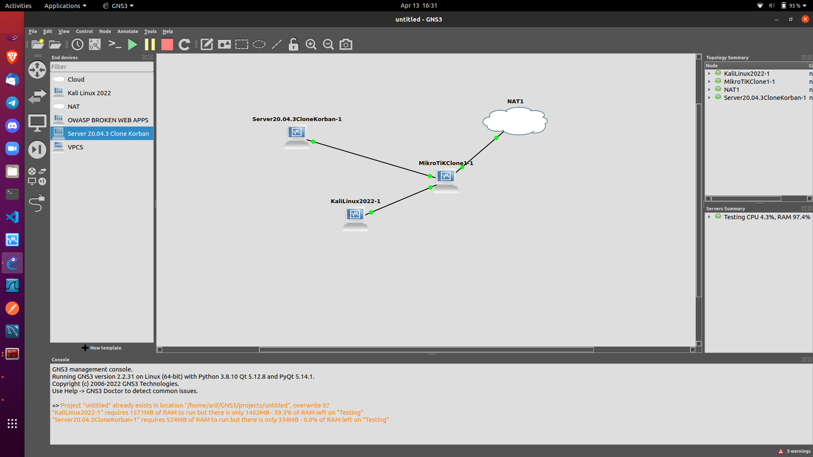
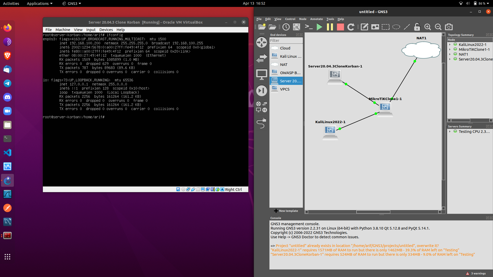
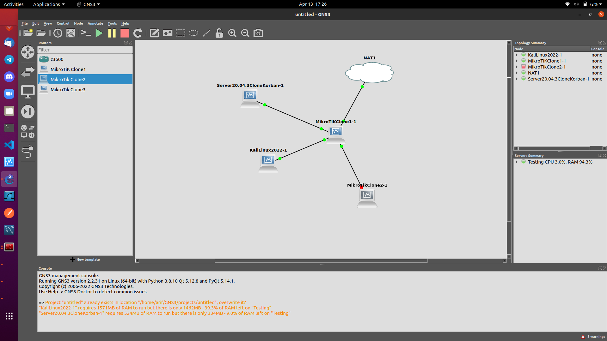
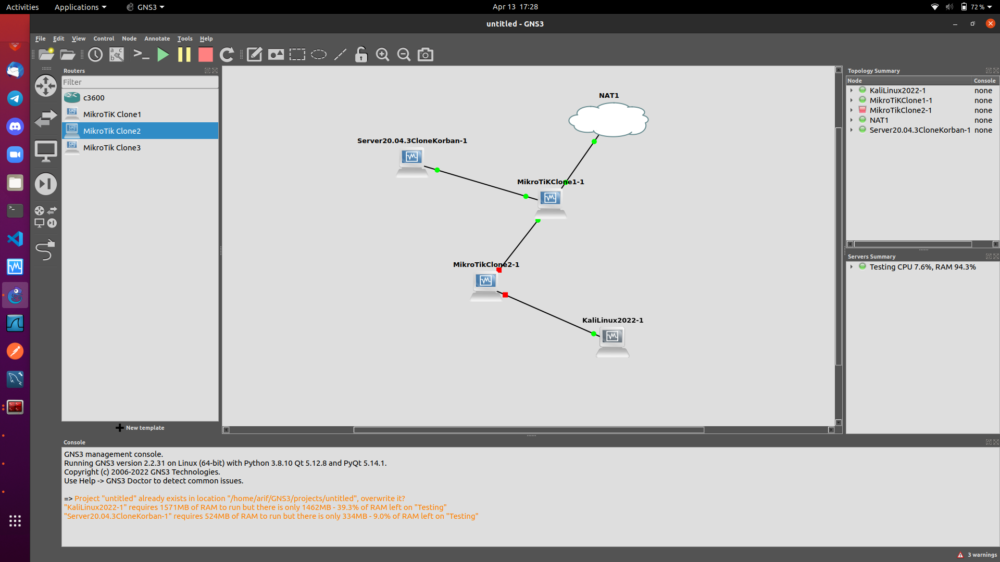

Network Access Control To ensure that potential attackers cannot infiltrate your network, comprehensive access control policies need to be in place for both users and devices. Network access control (NAC) can be set at the most granular level. For example, you could grant administrators full access to the network but deny access to specific confidential folders or prevent their personal devices from joining the network.
Antivirus and Antimalware Software Antivirus and antimalware software protect an organization from a range of malicious software, including viruses, ransomware, worms and trojans. The best software not only scans files upon entry to the network but continuously scans and tracks files.
Firewall Protection Firewalls, as their name suggests, act as a barrier between the untrusted external networks and your trusted internal network. Administrators typically configure a set of defined rules that blocks or permits traffic onto the network. For example, Forcepoint's Next Generation Firewall (NGFW) offers seamless and centrally managed control of network traffic, whether it is physical, virtual or in the cloud.
Virtual Private Networks Virtual private networks (VPNs) create a connection to the network from another endpoint or site. For example, users working from home would typically connect to the organization's network over a VPN. Data between the two points is encrypted and the user would need to authenticate to allow communication between their device and the network. Forcepoint's Secure Enterprise SD-WAN allows organizations to quickly create VPNs using drag-and-drop and to protect all locations with our Next Generation Firewall solution.
PAKE NAT1
DAN PAKE MIKOTIK
PAKE KALI LINUX
1. SAMBUNGKAN > MIKROTIK KABEL ENTHERNET0 KE > NAT1 nat0
2. SAMBUNGKAN > KALI LINUX KABEL ENTHERNET0 KE > MIKROTIK KE ENTHERNET4
BIAR AMAN SSH KE MIKROTIK
CHECK IP MIKROTIK NYA
Mikrotik: console SSH
Untuk bisa mengakses Mikrotik menggunakan SSH
Ubuntu Client
Edit
arif@Testing:~$ sudo nvim /etc/ssh/ssh_config
Buang Pagar # Nya
Ciphers aes128-ctr,aes192-ctr,aes256-ctr,aes128-cbc,3des-cbc
ssh ke Mikrotik
arif@Testing:~$ ssh -o KexAlgorithms=diffie-hellman-group14-sha1 -o HostKeyAlgorithms=+ssh-dss admin@192.168.122.103
SEKARANG CHECK DI KALI LINUX, KALI LINUX NYA BELUM DAPET IP KARENA MIKROTIK NYA BELUM DI ROUTING JADI ROUTER

RESET CONFIGURATION DULU SUPAYA BENER-BENER KOSONG
[admin@MikroTik] > /system reset-configuration
DI DESKTOP AKAN PUTUS CONNECTION NYA
MASUKAN PASSWORD NYA YANG BARU DI MIKOTIK CARA MASUK NYA PAKE SSH
CHECK, KELIHATAN NYA INTERFACE NYA MASIH ADA SATU
[admin@MikroTik] > /interface print
Flags: D - dynamic, X - disabled, R - running, S - slave
# NAME TYPE ACTUAL-MTU L2MTU MAX-L2MTU
0 R ether1 ether 1500
1 R ether2 ether 1500
2 R ether3 ether 1500
3 R ether4 ether 1500
4 R ether5 ether 1500
5 R ether6 ether 1500
6 R ether7 ether 1500
7 R ether8 ether 1500
CHECK IPv4
[admin@MikroTik] > /ip address print
Flags: X - disabled, I - invalid, D - dynamic
# ADDRESS NETWORK INTERFACE
0 D 192.168.122.103/24 192.168.122.0 ether1
AKTIFKAN DULU IPv6 NYA
KELIHATAN ipv6 NYA X ARTI NYA BELUM AKTIF
[admin@MikroTik] > /system package print
Flags: X - disabled
# NAME VERSION SCHEDULED
0 dude 6.49.5
1 routeros-x86 6.49.5
2 system 6.49.5
3 X ipv6 6.49.5
4 ups 6.49.5
5 wireless 6.49.5
6 hotspot 6.49.5
7 mpls 6.49.5
8 routing 6.49.5
9 ppp 6.49.5
10 dhcp 6.49.5
11 security 6.49.5
12 advanced-tools 6.49.5
CARA AKTIFKAN IPv6
PERHATIKAN DI ATAS NOMOR 3 X IPv6 NYA
[admin@MikroTik] > /system package enable numbers=3
CHECK LAGI
[admin@MikroTik] > /system package print
Flags: X - disabled
# NAME VERSION SCHEDULED
0 dude 6.49.5
1 routeros-x86 6.49.5
2 system 6.49.5
3 X ipv6 6.49.5 scheduled for enable
4 ups 6.49.5
5 wireless 6.49.5
6 hotspot 6.49.5
7 mpls 6.49.5
8 routing 6.49.5
9 ppp 6.49.5
10 dhcp 6.49.5
11 security 6.49.5
12 advanced-tools 6.49.5
scheduled for enable BERARTI MINTA DI REBOOT DULU MIKROTIK NYA
[admin@MikroTik] > /system reboot
CHECK, SEKARANG SUDAH AKTIF IPv6 NYA
[admin@MikroTik] > /ipv6 address print
Flags: X - disabled, I - invalid, D - dynamic, G - global, L - link-local
# ADDRESS FROM-... INTERFACE ADV
0 DL fe80::a00:27ff:fe20:7549/64 ether5 no
1 DL fe80::a00:27ff:fe6e:55ae/64 ether1
CHECK IPv6, MASIH BELUM DAPET IPv6 NYA
Membuat router IPv6 sederhana
# LAN Bridge
/interface bridge
add name=bridge1
/interface bridge port
add bridge=bridge1 interface=ether2
add bridge=bridge1 interface=ether3
add bridge=bridge1 interface=ether4
add bridge=bridge1 interface=ether5
add bridge=bridge1 interface=ether6
add bridge=bridge1 interface=ether7
add bridge=bridge1 interface=ether8
CHECK, LIHAT PALING BAWAH NOMOR 8 bridge1 SUDAH NYALA
[admin@MikroTik] > /interface print
Flags: D - dynamic, X - disabled, R - running, S - slave
# NAME TYPE ACTUAL-MTU L2MTU MAX-L2MTU
0 R ether1 ether 1500
1 RS ether2 ether 1500
2 RS ether3 ether 1500
3 RS ether4 ether 1500
4 RS ether5 ether 1500
5 RS ether6 ether 1500
6 RS ether7 ether 1500
7 RS ether8 ether 1500
8 R bridge1 bridge 1500 65535
Disable RA di semua interface
[admin@MikroTik] > /ipv6 nd set [ find default=yes ] disabled=yes
LIHAT MASIH fe80 DOANG
[admin@MikroTik] > /ipv6 address print
Flags: X - disabled, I - invalid, D - dynamic, G - global, L - link-local
# ADDRESS FROM-POOL INTERFACE ADVERTISE
0 DL fe80::a00:27ff:fe6e:55ae/64 ether1 no
1 DL fe80::a00:27ff:fe69:615c/64 bridge1 no
LAN SETUP
[admin@MikroTik] > /ipv6 address add address=2002:1234:5678::1/64 interface=bridge1 advertise=yes
CHECK LAGI, INI BISA DI advertise INI AKAN BISA DI REQUEST SAMA CLIENT-CLIENT DI JARINGAN
[admin@MikroTik] > /ipv6 address print
Flags: X - disabled, I - invalid, D - dynamic, G - global, L - link-local
# ADDRESS FROM-POOL INTERFACE ADVERTISE
0 DL fe80::a00:27ff:fe6e:55ae/64 ether1 no
1 DL fe80::a00:27ff:fe69:615c/64 bridge1 no
2 G 2002:1234:5678::1/64 bridge1 yes
CHECK nd NYA, TAPI MASIH DISABLE
[admin@MikroTik] > /ipv6 nd print
Flags: X - disabled, I - invalid, * - default
0 X* interface=all ra-interval=3m20s-10m ra-delay=3s mtu=unspecified reachable-time=unspecified
retransmit-interval=unspecified ra-lifetime=30m hop-limit=unspecified
advertise-mac-address=yes advertise-dns=yes managed-address-configuration=no
other-configuration=no
MENGAKTIFKAN nd DI INTERFACE BUAT bridge1 DOANG
[admin@MikroTik] > /ipv6 nd add interface=bridge1 ra-interval=20s-60s
CHECK SUDAH ADA DUA nd nya
[admin@MikroTik] > /ipv6 nd print
Flags: X - disabled, I - invalid, * - default
0 X* interface=all ra-interval=3m20s-10m ra-delay=3s mtu=unspecified reachable-time=unspecified
retransmit-interval=unspecified ra-lifetime=30m hop-limit=unspecified
advertise-mac-address=yes advertise-dns=yes managed-address-configuration=no
other-configuration=no
1 interface=bridge1 ra-interval=20s-1m ra-delay=3s mtu=unspecified reachable-time=unspecified
retransmit-interval=unspecified ra-lifetime=30m hop-limit=unspecified
advertise-mac-address=yes advertise-dns=yes managed-address-configuration=no
other-configuration=no
LIHAT DI KALI LINUX SUDAH ADA IPv6 NYA YANG PENTING SCOPE GLOBAL

COBA PING KE MIKROTIK, PASTIKAN NYAMBUNG KE MIKROTIK NYA

SEKARANG DI GNS3 NYA TAMBAHKAN SERVER KORBAN
SAMBUNG Ethernet0 > KE MIKROTIK DI Ethernet6
JALANKAN SERVER NYA APAKAH DAPET IP
CHECK DI SERVER ifconfig
SEKARANG IPv4
INI MASIH MIKROTIK YANG SAMA JADI IPv6 UDAH JALAN TINGGAL IPv4
/ip address add interface=bridge1 address=192.168.100.1/24
/ip route add gateway=bridge1
/ip dns set servers=1.1.1.1
/ip dns set allow-remote-request=yes
/ip firewall nat add chain=srcnat out-interface=ether1 action=masquerade
/ip firewall nat print
Setup DHCP Server dapat menggunakan
[admin@MikroTik] > /ip dhcp-server setup
Check saat konfigurasi DHCP Server
Select interface to run DHCP server on
dhcp server interface: bridge1
Select network for DHCP addresses
dhcp address space: 192.168.100.0/24
Select gateway for given network
gateway for dhcp network: 192.168.100.1
Select pool of ip addresses given out by DHCP server
addresses to give out: 192.168.100.100-192.168.100.200
Select DNS servers
dns servers: 192.168.122.1
Select lease time
lease time: 10m
Aktifkan DHCP Server, INI AKTIF
[admin@MikroTik] > /ip dhcp-server print
Flags: D - dynamic, X - disabled, I - invalid
# NAME INTERFACE RELAY ADDRESS-POOL LEASE-TIME ADD-ARP
0 dhcp1 bridge1 dhcp_pool0 10m
1. SEKARANG CHECK DI KALI LINUX DAPET IPv4 NGGA?

2. SEKARANG CHECK DI SERVER KORBAN DAPET IPv4 NGGA?
3. DAN PASTIKAN IPv6 NYA DI SERVER KORBAN SUDAH DAPET
COBA CHECK DI KALI LINUX BROWSER

SEKARANG TAMBAHKAN MIKROTIK 1 BIJI LAGI JADI ADA DUA ROUTER
SAMBUNG MIKROTIK2 KE KABEL > Ethernet0 KE > MIKROTIK1 Ethernet2
SEKARANG PUTUS SAMBUNGAN KALI LINUX PINDAHKAN DI BAWAH MIKROTIK2
JADI UJI EXPERIMEN BISA NGGA KIRA-KIRA KALI LINUX NYAMBUNG KE SERVER KORBAN?
SEKARANG JALANKAN MIKROTIK2 NYA
RESET DULU MIKROTIK NYA
/system reset-configuration
CHECK IP MIKROTIK2 NYA
MASUK PAKE TELNET
CHECK IPv6 NYA BELUM AKTIF, AKTIFKAN DULU
[admin@MikroTik] > /system package print
Flags: X - disabled
# NAME VERSION SCHEDULED
0 dude 6.49.5
1 routeros-x86 6.49.5
2 system 6.49.5
3 X ipv6 6.49.5
4 ups 6.49.5
5 wireless 6.49.5
6 hotspot 6.49.5
7 mpls 6.49.5
8 routing 6.49.5
9 ppp 6.49.5
10 dhcp 6.49.5
11 security 6.49.5
12 advanced-tools 6.49.5
AKTIFKAN IPv6 NYA
[admin@MikroTik] > /system package enable numbers=3
CHECK LAGI SUDAH AKTIF TAPI REBOOT DULU
[admin@MikroTik] > /system package print
Flags: X - disabled
# NAME VERSION SCHEDULED
0 dude 6.49.5
1 routeros-x86 6.49.5
2 system 6.49.5
3 X ipv6 6.49.5 scheduled for enable
4 ups 6.49.5
5 wireless 6.49.5
6 hotspot 6.49.5
7 mpls 6.49.5
8 routing 6.49.5
9 ppp 6.49.5
10 dhcp 6.49.5
11 security 6.49.5
12 advanced-tools 6.49.5
REBOOT
[admin@MikroTik] > /system reboot
CHECK IPv6 SUDAH AKTIF
[admin@MikroTik] > /ipv6 address print
Flags: X - disabled, I - invalid, D - dynamic, G - global, L - link-local
# ADDRESS FROM-POOL INTERFACE ADVERTISE
0 DL fe80::a00:27ff:fe8f:e163/64 ether4 no
1 DL fe80::a00:27ff:fe52:df6f/64 ether1 no
ROUTER 2
# LAN Bridge
/interface bridge
add name=bridge1
/interface bridge port
add bridge=bridge1 interface=ether2
add bridge=bridge1 interface=ether3
add bridge=bridge1 interface=ether4
add bridge=bridge1 interface=ether5
add bridge=bridge1 interface=ether6
add bridge=bridge1 interface=ether7
add bridge=bridge1 interface=ether8
CHECK IPv4
[admin@MikroTik] /interface bridge port> /ip address print
Flags: X - disabled, I - invalid, D - dynamic
# ADDRESS NETWORK INTERFACE
0 D 192.168.100.199/24 192.168.100.0 ether1
DISABLE RA di SEMUA INTERFACE
[admin@MikroTik] /ipv6 nd set [ find default=yes ] disabled=yes
CHECK LIHAT DISABLE
[admin@MikroTik] /interface bridge port> /ipv6 nd print
Flags: X - disabled, I - invalid, * - default
0 X* interface=all ra-interval=3m20s-10m ra-delay=3s mtu=unspecified
reachable-time=unspecified retransmit-interval=unspecified ra-lifetime=30m
hop-limit=unspecified advertise-mac-address=yes advertise-dns=yes
managed-address-configuration=no other-configuration=no
WAN IPv6 automatics
/ipv6 dhcp-client
add add-default-route=yes interface=ether1 request=prefix pool-name=IPv6-pool
ROUTER 1
Disable RA di semua interface
DI MIKROTIK1 TAMBAHKAN INI
/ipv6 nd set [ find default=yes ] disabled=yes
WAN IPv6 automatics
/ipv6 dhcp-client
add add-default-route=yes interface=ether1 request=prefix pool-name=IPv6-pool
LAN setup
/ipv6 address add address=2002:1234:5678::1/64 interface=bridge1 advertise=yes
/ipv6 pool add name=IPv6-for-client prefix-length=56 prefix=2002:1234:5678::/48
/ipv6 dhcp-server add name=server1 interface=bridge1 address-pool=IPv6-for-client
/ipv6 nd prefix add prefix=::/64 interface=bridge1 on-link=yes autonomous=no
/ipv6 nd add interface=bridge1 managed-address-configuration=yes other-configuration=yes advertise-dns=yes ra-interval=20s-60s
CHECK DI MIKROTIK1 AAPAKH SUDAH AKTIF?
[admin@MikroTik] /ipv6 dhcp-client> /ipv6 dhcp-server print
Flags: D - dynamic, X - disabled, I - invalid
# NAME INTERFACE ADDRESS-POOL PREFERENCE LEASE-TIME
0 server1 bridge1 IPv6-for-client 255 3d
AKTIF ra-interval nya
DI ROUTER 1 SUDAH BERESS TINGGAL DI ROUTER 2
[admin@MikroTik] /ipv6 dhcp-client> /ipv6 nd print
Flags: X - disabled, I - invalid, * - default
0 X* interface=all ra-interval=3m20s-10m ra-delay=3s mtu=unspecified reachable-time=unspecified
retransmit-interval=unspecified ra-lifetime=30m hop-limit=unspecified
advertise-mac-address=yes advertise-dns=yes managed-address-configuration=no
other-configuration=no
1 interface=bridge1 ra-interval=20s-1m ra-delay=3s mtu=unspecified reachable-time=unspecified
retransmit-interval=unspecified ra-lifetime=30m hop-limit=unspecified
advertise-mac-address=yes advertise-dns=yes managed-address-configuration=no
other-configuration=no
DI ROUTER 2
Tambahkan Routing Statik ke Mikrotik2
/ipv6 route add dst-address=2002:1234:5678:2::/64 gateway=2002:1234:5678::2
Disable RA di semua interface
/ipv6 nd set [ find default=yes ] disabled=yes
WAN IPv6 automatics
/ipv6 dhcp-client
add add-default-route=yes interface=ether1 request=prefix pool-name=IPv6-pool
WAN IPv6 static
/ipv6 address add address=2002:1234:5678::2/64 interface=ether1 advertise=yes
LAN Setup
/ipv6 address add address=2002:1234:5678:2::1/64 interface=bridge1 advertise=yes
ND
/ipv6 nd add interface=bridge1 ra-interval=20s-60s
Check
[admin@MikroTik] /ipv6 dhcp-client> /ipv6 address print
Flags: X - disabled, I - invalid, D - dynamic, G - global, L - link-local
# ADDRESS FROM-POOL INTERFACE ADVERTISE
0 DL fe80::a00:27ff:fe52:df6f/64 ether1 no
1 DL fe80::a00:27ff:fe21:6b0f/64 bridge1 no
2 G 2002:1234:5678::2/64 ether1 yes
3 G 2002:1234:5678:2::1/64 bridge1 yes
COBA PING KE ROUTER 1
PASTIKAN NYAMBUNG
[admin@MikroTik] /ipv6 dhcp-client> /ping 2002:1234:5678::1
SEQ HOST SIZE TTL TIME STATUS
0 2002:1234:5678::1 56 64 0ms echo reply
1 2002:1234:5678::1 56 64 0ms echo reply
sent=2 received=2 packet-loss=0% min-rtt=0ms avg-rtt=0ms max-rtt=0ms
CHECK DI KALI LINUX, DAPET IP TIDAK ?
DI ROUTER 1
SEKARANG ROUTING STATIC
IPv6: Mikrotik: Static Routing Sedehana
JANGAN LUPA GANTI IPv6 NYA
/ipv6 route add dst-address=2002:1234:5678:2::/64 gateway=2002:1234:5678::2
CHECK, BERHASIL DI TAMBAHKAN TABEL ROUTING TAMBAHAN NYA
[admin@MikroTik] /ipv6 dhcp-client> /ipv6 route print
Flags: X - disabled, A - active, D - dynamic, C - connect, S - static, r - rip, o - ospf, b - bgp,
U - unreachable
# DST-ADDRESS GATEWAY DISTANCE
0 ADS 2002:1234:5678::/56 fe80::a00:27ff:fe52:d... 1
1 ADC 2002:1234:5678::/64 bridge1 0
2 S 2002:1234:5678:2::/64 2002:1234:5678::2 1
COBA PING KE ROUTER 2
[admin@MikroTik] > /ping 2002:1234:5678::2
SEQ HOST SIZE TTL TIME STATUS
0 2002:1234:5678::2 56 64 1ms echo reply
sent=1 received=1 packet-loss=0% min-rtt=1ms avg-rtt=1ms max-rtt=1ms
BISA PING KE LAN NYA ROUTER 2
[admin@MikroTik] > /ping 2002:1234:5678:2::1
SEQ HOST SIZE TTL TIME STATUS
0 2002:1234:5678:2::1 56 64 1ms echo reply
1 2002:1234:5678:2::1 56 64 0ms echo reply
2 2002:1234:5678:2::1 56 64 0ms echo reply
sent=3 received=3 packet-loss=0% min-rtt=0ms avg-rtt=0ms max-rtt=1ms
DI ROUTER 1 COBA PING KALI LINUX
[admin@MikroTik] > /ping 2002:1234:5678:2:a235:6c95:8fb:167c
SEQ HOST SIZE TTL TIME STATUS
0 2002:1234:5678:2:a235:6c95:8fb:167c 56 63 2ms echo reply
1 2002:1234:5678:2:a235:6c95:8fb:167c 56 63 1ms echo reply
sent=2 received=2 packet-loss=0% min-rtt=1ms avg-rtt=1ms max-rtt=2ms

COBA SEKARANG DI KALI LINUX PING KE ROUTER 2

COBA SEKARANG DI KALI LINUX PING KE ROUTER 1
COBA SEKARANG DI KALI LINUX PING KE SERVER

COBA BROWSER PAKE IPv6 NYA SERVER

JADI IPv4 NYA KALI LINUX BELUM DAPE, KARENA ROUTER 2 NYA BELUM DI CONFIGURE SEKARANG CONFIGURASI IPv4 NYA DI ROUTER 2 NYA BIAR KALI LINUX NYA DAPET IPv4
DI ROUTER 2
INI IPv4 WAN
[admin@MikroTik] /ipv6 dhcp-client> /ip address print
Flags: X - disabled, I - invalid, D - dynamic
# ADDRESS NETWORK INTERFACE
0 D 192.168.100.199/24 192.168.100.0 ether1
TAMBAHKAN IPv4
[admin@MikroTik] /ipv6 dhcp-client> /ip address add interface=bridge1 address=172.16.100.1/24
CHECK, SUDAH ADA
PERHATIKAN DI IPv4 192.168.100.199 ADA D NYA ITU ARTINYA DYNAMIC DAPET NYA OTOMATIF DARI PROVIDER DARI MIKROTIK 1
[admin@MikroTik] /ipv6 dhcp-client> /ip address print
Flags: X - disabled, I - invalid, D - dynamic
# ADDRESS NETWORK INTERFACE
0 D 192.168.100.199/24 192.168.100.0 ether1
1 172.16.100.1/24 172.16.100.0 bridge1
MASIH DI ROUTER 2
/ip route add gateway=bridge1
/ip dns set servers=8.8.8.8
/ip dns set allow-remote-request=yes
/ip firewall nat add chain=srcnat out-interface=ether1 action=masquerade
/ip firewall nat print
CHECK, SUDAH AKTIF NAT NYA
[admin@MikroTik] > /ip firewall nat print
Flags: X - disabled, I - invalid, D - dynamic
0 chain=srcnat action=masquerade out-interface=ether1
Setup DHCP Server dapat menggunakan
[admin@MikroTik] > /ip dhcp-server setup
Select interface to run DHCP server on
dhcp server interface: bridge1
Select network for DHCP addresses
dhcp address space: 172.16.100.0/24
Select gateway for given network
gateway for dhcp network: 172.16.100.1
Select pool of ip addresses given out by DHCP server
addresses to give out: 172.16.100.100-172.16.100.200
Select DNS servers
dns servers: 192.168.100.1,192.168.122.1
Select lease time
lease time: 10m
SEKARANG CHECK DI KALI LINUX DAPET IPv4 NGGA?

SEKARANG BROWSER KE IPv4 SERVER PASTIKAN NYAMBUNG

DISINI MASIH STATIC DI MIKROTIK 2 NYA KITA UJI COBA BIAR BISA AUTOMATIS DAPET IP NYA
SEKARANG STOP SEMUA DULU DI GNS3 NYA


Routing
CHECK MASIH BELUM DAPET IP INI DI MIKROTIK 1
[admin@MikroTik] > /ip address print
Flags: X - disabled, I - invalid, D - dynamic
# ADDRESS NETWORK INTERFACE
MINTA IP
[admin@MikroTik] > /ip dhcp-client add interface=ether3 disabled=no
[admin@MikroTik] > /ip address print
Flags: X - disabled, I - invalid, D - dynamic
# ADDRESS NETWORK INTERFACE
0 D 192.168.122.233/24 192.168.122.0 ether3
CEK, PING
[admin@MikroTik] > ping 192.168.100.1
SEQ HOST SIZE TTL TIME STATUS
0 192.168.100.1 56 63 3ms
1 192.168.100.1 56 63 2ms
[admin@MikroTik] > /ip address add address=10.10.1.1/30 interface=ether1
[admin@MikroTik] > /ip address add address=10.10.1.5/30 interface=ether2
PERHATIKAN DI BAGIAN ADDRESS 0 D 192.168.122.233/24 ADA TULISAN D BERARTI DYNAMIC
IP ADDRES 1 DAN 2 ITU IP STATIK
[admin@MikroTik] > /ip address print
Flags: X - disabled, I - invalid, D - dynamic
# ADDRESS NETWORK INTERFACE
0 D 192.168.122.233/24 192.168.122.0 ether3
1 10.10.1.1/30 10.10.1.0 ether1
2 10.10.1.5/30 10.10.1.4 ether2
MENGAKTIFKAN NAT
[admin@MikroTik] > /ip firewall nat add chain=srcnat out-interface=ether3 action=masquerade
[admin@MikroTik] > /ip firewall nat print
Flags: X - disabled, I - invalid, D - dynamic
0 chain=srcnat action=masquerade out-interface=ether3
SEKARANG KE MIKROTIK 2
BELUM DAPET IP
[admin@MikroTik] > /ip address print
Flags: X - disabled, I - invalid, D - dynamic
# ADDRESS NETWORK INTERFACE
[admin@MikroTik] > /ip address add address=10.10.1.6/30 interface=ether1
[admin@MikroTik] > /ip address add address=10.10.1.9/30 interface=ether2
[admin@MikroTik] > /ip address add address=172.16.1.1/16 interface=ether3
DI PC1
PC1> ip 172.16.1.100/16 172.16.1.1
PC1> ping 172.16.1.1
PC1> ping 10.10.1.6
PC1> ping 10.10.1.9
CEK TABEL ROUTING DI MIKROTIK 1
[admin@MikroTik] > /ip route print
Flags: X - disabled, A - active, D - dynamic,
C - connect, S - static, r - rip, b - bgp, o - ospf, m - mme,
B - blackhole, U - unreachable, P - prohibit
# DST-ADDRESS PREF-SRC GATEWAY DISTANCE
0 ADS 0.0.0.0/0 192.168.122.1 1
1 ADC 10.10.1.0/30 10.10.1.1 ether1 0
2 ADC 10.10.1.4/30 10.10.1.5 ether2 0
3 ADC 192.168.122.0/24 192.168.122.233 ether3 0
CEK TABEL ROUTING DI MIKROTIK 2
[admin@MikroTik] > /ip route print
Flags: X - disabled, A - active, D - dynamic,
C - connect, S - static, r - rip, b - bgp, o - ospf, m - mme,
B - blackhole, U - unreachable, P - prohibit
# DST-ADDRESS PREF-SRC GATEWAY DISTANCE
0 ADC 10.10.1.4/30 10.10.1.6 ether1 0
1 ADC 10.10.1.8/30 10.10.1.9 ether2 0
2 ADC 172.16.0.0/16 172.16.1.1 ether3 0
DI MIKROTIK 1
[admin@MikroTik] > /routing ospf instance set name=default router-id=10.10.1.1 numbers=0
[admin@MikroTik] > /routing ospf instance enable numbers=0
[admin@MikroTik] > /routing ospf network add network=10.10.1.0/30 area=backbone
[admin@MikroTik] > /routing ospf network add network=10.10.1.4/30 area=backbone
[admin@MikroTik] > /ip route print
Flags: X - disabled, A - active, D - dynamic,
C - connect, S - static, r - rip, b - bgp, o - ospf, m - mme,
B - blackhole, U - unreachable, P - prohibit
# DST-ADDRESS PREF-SRC GATEWAY DISTANCE
0 ADS 0.0.0.0/0 192.168.122.1 1
1 ADC 10.10.1.0/30 10.10.1.1 ether1 0
2 ADC 10.10.1.4/30 10.10.1.5 ether2 0
3 ADo 10.10.1.8/30 10.10.1.6 110
4 ADo 172.16.0.0/16 10.10.1.6 110
5 ADC 192.168.122.0/24 192.168.122.233 ether3 0
DI MIKROTIK 2
[admin@MikroTik] > /routing ospf instance set name=default router-id=10.10.1.6 numbers=0
[admin@MikroTik] > /routing ospf instance enable numbers=0
[admin@MikroTik] > /routing ospf network add network=10.10.1.4/30 area=backbone
[admin@MikroTik] > /routing ospf network add network=10.10.1.8/30 area=backbone
[admin@MikroTik] > /routing ospf network add network=172.16.0.0/16 area=backbone
[admin@MikroTik] > /ip route print
Flags: X - disabled, A - active, D - dynamic,
C - connect, S - static, r - rip, b - bgp, o - ospf, m - mme,
B - blackhole, U - unreachable, P - prohibit
# DST-ADDRESS PREF-SRC GATEWAY DISTANCE
0 ADo 10.10.1.0/30 10.10.1.5 110
1 ADC 10.10.1.4/30 10.10.1.6 ether1 0
2 ADC 10.10.1.8/30 10.10.1.9 ether2 0
3 ADC 172.16.0.0/16 172.16.1.1 ether3 0
COBA SADAP PAKE WIRESHARK
BUKA WIRESHARK NYA DI GNS3
NGASIH TAU KE SEMUA ROUTER KALO LEWAT SAYA BISA KE INTERNET
WEBSITE > https://lms.onnocenter.or.id/wiki/index.php/Mikrotik:_OSPF_Sederhana_distribute_default_routing
COPY KAN KE MIKROTIK 1
[admin@MikroTik] > /routing ospf instance set distribute-default=if-installed-as-type-1 numbers=0
SEKARANG COBA CEK DI MIKROTIK 2
LIHAT SEKARANG PERTAMBAH > 0 ADo 0.0.0.0/0 10.10.1.5 110
ARTINYA KALO MAU KE INTERNET LEWAT SAYA, LEWAT > 10.10.1.5
[admin@MikroTik] > /ip route print
Flags: X - disabled, A - active, D - dynamic,
C - connect, S - static, r - rip, b - bgp, o - ospf, m - mme,
B - blackhole, U - unreachable, P - prohibit
# DST-ADDRESS PREF-SRC GATEWAY DISTANCE
0 ADo 0.0.0.0/0 10.10.1.5 110
1 ADo 10.10.1.0/30 10.10.1.5 110
2 ADC 10.10.1.4/30 10.10.1.6 ether1 0
3 ADC 10.10.1.8/30 10.10.1.9 ether2 0
4 ADC 172.16.0.0/16 172.16.1.1 ether3 0
COBA PING PAKE PC1
PC1> ping 10.10.1.1
PC1> ping 192.168.100.1
SEKARANG TAMBAHKAN MIKROTIK 3 DAN PC2 NYA DI GNS3
WEBSITE > https://lms.onnocenter.or.id/wiki/index.php/Mikrotik:_OSPF_Sederhana
Sambungan
- R3:
- eth0: -- R1: eth0
- eth1: -- R2: eth1
- eth2: -- LAN 192.168.1.1/24
DAN START JALANKAN MIKROTIK 3 DAN PC2
CEK IP MIKROTIK 3
[admin@MikroTik] > /ip address print
Flags: X - disabled, I - invalid, D - dynamic
# ADDRESS NETWORK INTERFACE
COPY KAN DI MIKROTIK 3
[admin@MikroTik] > /ip address print
Flags: X - disabled, I - invalid, D - dynamic
# ADDRESS NETWORK INTERFACE
COPY KAN DI MIKROTIK 3
[admin@MikroTik] > /ip address add address=10.10.1.2/30 interface=ether1
[admin@MikroTik] > /ip address add address=10.10.1.10/30 interface=ether2
[admin@MikroTik] > /ip address add address=192.168.1.1/24 interface=ether3
CEK IP MIKROTIK 3
[admin@MikroTik] > /ip address print
Flags: X - disabled, I - invalid, D - dynamic
# ADDRESS NETWORK INTERFACE
0 10.10.1.2/30 10.10.1.0 ether1
1 10.10.1.10/30 10.10.1.8 ether2
2 192.168.1.1/24 192.168.1.0 ether3
DI PC2
PC2> ip 192.168.1.100/24 192.168.1.1
PC2> ping 10.10.1.10
DI MIKROTIK 3 COPY KAN
[admin@MikroTik] > /routing ospf instance set name=default router-id=10.10.1.2 numbers=0
[admin@MikroTik] > /routing ospf instance enable numbers=0
[admin@MikroTik] > /routing ospf network add network=10.10.1.0/30 area=backbone
[admin@MikroTik] > /routing ospf network add network=10.10.1.8/30 area=backbone
[admin@MikroTik] > /routing ospf network add network=192.168.1.0/24 area=backbone
CEK DI MIKROTIK 3
SEKARANG UDAH DAPET TABEL ROUTING NYA
[admin@MikroTik] > /ip route print
Flags: X - disabled, A - active, D - dynamic,
C - connect, S - static, r - rip, b - bgp, o - ospf, m - mme,
B - blackhole, U - unreachable, P - prohibit
SEKARANG MENGGUNAKAN PAKE CISCO
Cisco: BGP Sederhana tanpa filter
TUTORIAL > https://lms.onnocenter.or.id/wiki/index.php/Cisco
TUTORIAL > https://lms.onnocenter.or.id/wiki/index.php/Cisco:_BGP_Sederhana_tanpa_filter
PAKE CISCO c3600
MASUKAN PC1 PC2 PC3
JALANKAN DULU CISCO NYA
KALO UDAH START MASUK KE CONSOLE NYA CISCO 1
MASUKAN PERINTAH SEPERTI INI ENTER DAN ENTER LAGI
COPY KAN INI DI R1
Setup connection
ISP1
enable
configure terminal
interface Ethernet 1/0
ip address 192.168.1.1 255.255.255.0
no shutdown
exit
interface Ethernet 1/1
ip address 192.168.3.1 255.255.255.0
no shutdown
exit
interface Ethernet 1/2
ip address 10.100.100.1 255.255.255.0
no shutdown
exit
interface Ethernet 1/3
ip address 10.100.200.1 255.255.255.0
no shutdown
exit
end
COPY KAN DI R2
ISP2
enable
configure terminal
interface Ethernet1/0
ip address 192.168.2.1 255.255.255.0
no shutdown
exit
interface Ethernet1/1
ip address 192.168.3.2 255.255.255.0
no shutdown
exit
interface Ethernet1/2
ip address 10.10.10.1 255.255.255.0
no shutdown
exit
interface Ethernet1/3
ip address 10.10.20.1 255.255.255.0
no shutdown
exit
end
COBA PING KE R1
INI DI R3
R3#ping 192.168.1.1
R3#ping 192.168.2.1
R3#ping 192.168.2.1
R3#ping 192.168.2.3
SEKARANG MASUK KE CONSOLE NYA PC1
PC1> ip 10.100.100.100/24 10.100.100.1
PC1> ping 10.100.100.1
PC1> ping 192.168.1.1
PC1> ping 192.168.3.1
SEKARANG MASUK KE CONSOLE NYA PC2
PC2> ip 10.10.10.100/24 10.10.10.1
BGP Peering
ISP1
DI R1
enable
configure terminal
router bgp 10
bgp router-id 192.168.1.1
! address-family ipv4 unicast
network 10.100.100.0 mask 255.255.255.0
network 10.100.200.0 mask 255.255.255.0
neighbor 192.168.3.2 remote-as 20
neighbor 192.168.1.2 remote-as 30
neighbor 192.168.3.2 activate
neighbor 192.168.1.2 activate
! neighbor 192.168.3.2 default-originate
! neighbor 192.168.1.2 default-originate
end
ISP2
DI R2
enable
configure terminal
router bgp 20
bgp router-id 192.168.2.1
! address-family ipv4 unicast
network 10.10.10.0 mask 255.255.255.0
network 10.10.20.0 mask 255.255.255.0
neighbor 192.168.3.1 remote-as 10
neighbor 192.168.2.2 remote-as 30
neighbor 192.168.3.1 activate
neighbor 192.168.2.2 activate
end
ISP3
DI R3
enable
configure terminal
router bgp 30
bgp router-id 192.168.1.2
! address-family ipv4 unicast
network 10.1.1.0 mask 255.255.255.0
network 10.1.2.0 mask 255.255.255.0
neighbor 192.168.1.1 remote-as 10
neighbor 192.168.2.1 remote-as 20
neighbor 192.168.1.1 activate
neighbor 192.168.2.1 activate
end
CEK DI R3
R3#show bgp all
For address family: IPv4 Unicast
BGP table version is 9, local router ID is 192.168.1.2
Status codes: s suppressed, d damped, h history, * valid, > best, i - internal,
r RIB-failure, S Stale
Origin codes: i - IGP, e - EGP, ? - incomplete
Network Next Hop Metric LocPrf Weight Path
*> 10.1.1.0/24 0.0.0.0 0 32768 i
*> 10.1.2.0/24 0.0.0.0 0 32768 i
*> 10.10.10.0/24 192.168.2.1 0 0 20 i
*> 10.10.20.0/24 192.168.2.1 0 0 20 i
* 10.100.100.0/24 192.168.2.1 0 20 10 i
*> 192.168.1.1 0 0 10 i
* 10.100.200.0/24 192.168.2.1 0 20 10 i
*> 192.168.1.1 0 0 10 i
CEK
R3#show bgp ipv4 unicast neighbors
CARA CEK
show ip route
show ip bgp 10.100.1000.0/24
show ip bgp neighbors 192.168.2.2 advertised-routes
show ip bgp neighbor 192.168.1.1 routes
show bgp ipv4 unicast neighbors
show bgp ipv4 unicast summary